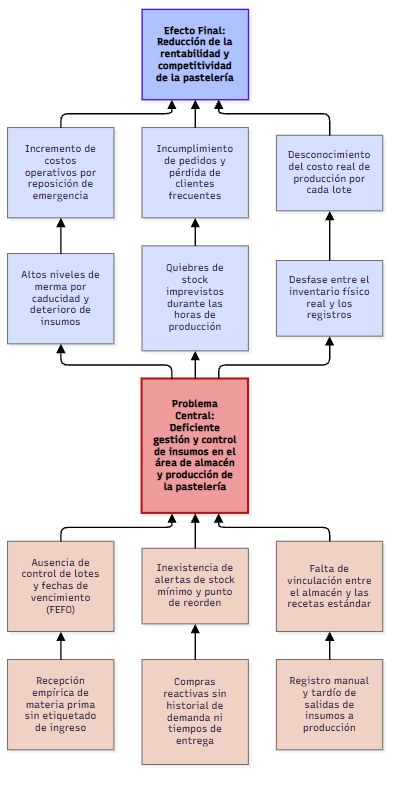
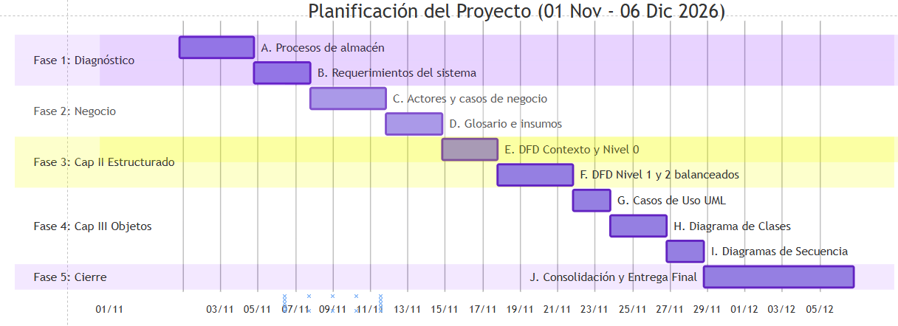

Marco Teórico
Sistema de Gestión de Insumos
Portada
Título del tema: Sistema de Gestión de Insumos para la Pastelería Esmeralda.
Integrantes del equipo:
- Cordova Torrico Lizbeth Rita
- Cuba Mamani Aleyssa Samantha
- Limachi Suxo Joshelyn Wara
- Morales Alvarez Luis Alvaro
- Vidal Condorena Daniel Alejandro
Tabla de Contenido
- I. GENERALIDADES Y MARCO TEÓRICO
- 1. Introducción
- 2. Antecedentes
- 3. Planteamiento del Problema
- 4. Árbol de Problemas
- 5. Formulación del Problema
- 6. Propósito del Estudio
- 7. Método, medios e instrumentos de investigación
- 8. Planificación de actividades
- II. ANÁLISIS Y DISEÑO ESTRUCTURADO
- III. ANÁLISIS Y DISEÑO ORIENTADO A OBJETOS
1. Introducción
La industria de la pastelería y repostería se caracteriza por el manejo diario de una amplia variedad de
materias primas con distintos grados de perecibilidad, costos variables y condiciones estrictas de
almacenamiento.
Insumos esenciales como lácteos, huevos, mantequillas, coberturas de chocolate, frutas frescas, harinas
especiales y aditivos requieren un seguimiento riguroso desde su recepción en almacén hasta su
transformación en el área de producción.
En la mayoría de las pastelerías pequeñas y medianas, el control de existencias se realiza de forma
empírica o mediante registros manuales desconectados del flujo real de producción. Esta brecha operativa
genera pérdidas económicas por caducidad de ingredientes, compras de emergencia a sobrecosto y retrasos
en la elaboración de pedidos por faltantes no detectados a tiempo. El presente informe estructura el
análisis y diseño de un sistema automatizado de gestión de insumos orientado a estandarizar el control
de lotes,
optimizar la rotación de stock y vincular el consumo de materia prima con las recetas estándar de
producción.
2. Antecedentes
Históricamente, los negocios de pastelería artesanal han administrado sus almacenes mediante cuadernos de
bitácora, kardex físicos o planillas básicas de cálculo. Si bien estos registros cumplen una función
elemental en
emprendimientos con bajo volumen de ventas, pierden efectividad cuando el catálogo de productos se
diversifica y la rotación de insumos se acelera en temporadas de alta demanda.
Diversos estudios aplicados a pequeñas y medianas empresas del sector gastronómico demuestran que las
mermas no controladas de materia prima representan entre el 8% y el 15% del costo total de operación. En
respuesta a esta problemática, la evolución de los sistemas de información ha permitido trasladar
metodologías logísticas industriales como la rotación por fecha de vencimiento y el descuento automático
por receta estándar hacia plataformas accesibles para pastelerías, mejorando la
trazabilidad de cada lote de producción.
3. Planteamiento del Problema
En la operación cotidiana de la pastelería, el área de almacén e insumos enfrenta dificultades críticas
derivadas de la ausencia de un sistema centralizado de control de inventarios. Las entradas de
mercadería entregadas por los proveedores y las salidas diarias hacia el obrador de pastelería no se
registran en tiempo real, provocando una distorsión constante entre el stock físico real y el stock
teórico.
Esta situación desencadena cuatro problemáticas operativas concretas:
• Pérdidas por vencimiento y deterioro: Los insumos altamente perecederos (crema de
leche, frutas,
claras, rellenos) se almacenan sin un control automatizado de fechas de caducidad, ocasionando
desperdicios frecuentes.
• Quiebres de stock en producción: La falta de alertas de stock mínimo impide prever el
agotamiento de
ingredientes críticos antes de iniciar la jornada de horneado y decoración.
• Descontrol en el rendimiento de recetas: La salida de insumos hacia producción se
realiza a granel sin
contrastar las cantidades entregadas frente a la receta estándar de cada pastel o postre.
• Sobrecostos en adquisiciones: Ante la falta de planificación de compras, el negocio
recurre a compras
urgentes al por menor, reduciendo el margen de utilidad por unidad vendida.
4. Árbol de Problemas

5. Formulación del Problema
Pregunta General:
¿De qué manera el análisis y diseño de un sistema automatizado de gestión de
insumos permitirá optimizar el control de inventarios, reducir las mermas por caducidad y garantizar el
abastecimiento oportuno en el área de producción de la pastelería?
Preguntas Específicas:
• ¿Cómo estructurar el registro y clasificación de materias primas perecederas y no perecederas para
asegurar su rotación bajo el criterio primero en expirar, primero en salir?
• ¿De qué forma la integración de recetas estándar en el sistema permitirá controlar el
consumo exacto
de insumos por orden de producción?
• ¿Qué indicadores y alertas automatizadas se requieren para prevenir quiebres de stock y optimizar el
cronograma de compras a proveedores?
6. Propósito del Estudio (Objetivos Generales y Específicos)
Objetivo General:
Analizar y diseñar un sistema de gestión y control de insumos para
la pastelería que modele el registro automatizado de entradas y salidas, el monitoreo de fechas de
vencimiento y
el descuento por receta estándar, con el propósito de disminuir las mermas operativas y asegurar la
disponibilidad continua de materia prima.
Objetivos Específicos:
• Realizar el relevamiento y diagnóstico de los flujos actuales de recepción,
almacenamiento, conservación y despacho de insumos en la pastelería.
• Categorizar y codificar el catálogo de insumos según su naturaleza (secos, refrigerados, congelados y
empaques), unidades de conversión y vida útil.
• Diseñar el módulo de control de existencias por lotes y fechas de caducidad bajo el método FEFO,
incorporando alertas tempranas de vencimiento y stock mínimo.
• Modelar el módulo de formulación de recetas estándar que descuente automáticamente
los ingredientes utilizados según las órdenes de producción diarias.
• Definir la estructura de reportes gerenciales sobre valorización de inventario, historial de mermas,
rendimiento de
materia prima y sugerencias de reabastecimiento.
7. Método, Medios e Instrumentos de Investigación
Marco Teórico Referencial:
• Gestión de Inventarios en Pastelería: Consiste en la administración planificada de
materias primas, insumos intermedios (premezclas, rellenos, almíbares base) y material de empaque. A
diferencia del comercio minorista tradicional, el inventario pastelero sufre transformaciones físicas y
químicas que exigen controlar tanto el peso bruto comprado como el peso neto utilizable (merma de
limpieza o cocción).
• Método FEFO (First Expired, First Out): Metodología logística en la cual los
lotes de insumos con fecha de caducidad más próxima son los primeros en despacharse al área de
producción, independientemente de su fecha de ingreso al almacén. Su aplicación es indispensable en
lácteos, ovoproductos, levaduras frescas y frutas.
• Método PEPS (Primero en Entrar, Primero en Salir / FIFO): Criterio aplicado a
insumos no perecederos de larga duración (cajas, bases de cartón, cintas, utensilios descartables) y a
la valuación contable del inventario, asegurando la rotación continua del capital de trabajo.
• Receta Estándar de Producción: Fórmula técnica cuantificada que detalla
la lista exacta de ingredientes, las cantidades netas, el porcentaje de merma permitida y el costo
unitario requerido para elaborar un lote específico de producto pastelero. Permite que el sistema
descuente automáticamente del inventario la proporción exacta de insumos por cada pastel producido.
• Punto de Reorden y Stock de Seguridad: El stock de seguridad constituye el colchón
mínimo de existencias para enfrentar variaciones imprevistas en la demanda de pasteles o demoras del
proveedor. El punto de reorden es el umbral numérico de inventario que dispara automáticamente una
alerta de compra considerando el tiempo de entrega del proveedor (Lead Time).
• Fundamentos para el Análisis y Diseño Estructurado (Capítulo II): El enfoque
estructurado modela el sistema basado en los procesos y el flujo de la información mediante Diagramas de
Flujo de Datos (DFD). Para garantizar la integridad del modelo arquitectónico, es una regla estricta de
diseño que exista un balanceo perfecto; es decir, la cantidad de entradas y salidas de datos
debe ser exactamente igual en cada nivel del diagrama (desde el DFD de Contexto, Nivel 0,
Nivel 1, etc.), asegurando que ninguna información se pierda o se genere de la nada.
• Fundamentos para el Análisis y Diseño Orientado a Objetos (Capítulo III): Este
enfoque modela el sistema mediante la identificación de objetos, sus atributos y comportamientos,
utilizando el Lenguaje Unificado de Modelado (UML). Se desarrollan diagramas de Casos de Uso, diagramas
de Clases y diagramas de Secuencia. Para el modelado de los datos a nivel de clases lógicas, se proyecta
una estructura de base de datos tradicional y normalizada, utilizando nombres de
tablas/entidades sencillos e intuitivos (como Insumo, Lote, Receta), descartando esquemas
complejos como el modelado en estrella al tratarse de un sistema transaccional puro.
8. Planificación de Actividades
La ejecución del análisis y diseño se estructura en cinco fases semanales durante el periodo comprendido
del 1 de noviembre al 6 de diciembre de 2026.
A. Estructura por Fases y Tareas:
• Fase 1: Relevamiento y Diagnóstico (01/11 - 07/11): Tarea A: Identificación de
procesos actuales en almacén y producción. Tarea B: Definición de requerimientos funcionales y no
funcionales.
• Fase 2: Modelado del Negocio (08/11 - 14/11): Tarea C: Identificación de actores del
sistema y casos de uso del negocio. Tarea D: Elaboración del glosario de términos (insumos, recetas,
mermas).
• Fase 3: Análisis y Diseño Estructurado (15/11 - 21/11): Tarea E: Elaboración del DFD
de Contexto y DFD Nivel 0. Tarea F: Expansión a niveles inferiores aplicando balanceo estricto de
entradas y salidas.
• Fase 4: Análisis y Diseño Orientado a Objetos (22/11 - 28/11): Tarea G: Elaboración
de Diagramas de Casos de Uso del sistema. Tarea H: Diseño del Diagrama de Clases lógico (modelo
relacional tradicional). Tarea I: Elaboración de Diagramas de Secuencia para procesos críticos.
• Fase 5: Consolidación del Documento (29/11 - 06/12): Tarea J: Integración de los
Capítulos I, II y III, revisión de consistencia y entrega del informe final.
B. Diagrama de Gantt (Cronograma del 1 de noviembre al 6 de diciembre de 2026):
